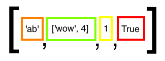

An assignement statement connects a variable to a specific value.
<variable> = <value>
It behaves like structural language according to the Backus-Naur form. This means the right side of the statement always gets evaluated first!
something like minutes = minutes + 1 is not possible and produces an error.
In Python the = sign is used for an assignment, but imagine it to be an arrow <=.
this is a number: 2
and this another one: 12
we can do arithmetics with them! all these mathematical symbols work as expected:
+ - * /
like this: 2 + 12
and as a result we get: 14
yay!
python makes bold simplifications if you allow it to!
In order to make decimals be considered in the output, one number in the calculation has to be float (=floating point).
we do this: 2.0 + 12
and get this: 14.0
other examples make the use of this more obvious. think of pi!
can have one of two possible states: True or False. Learn more here
<value> and <value>
True if both values are true, in any other case it evaluates to False.
<value> or <value>
False only if both values are false, otherwise it evaluates to True.
ATTENTION: due to this property, python checks the first variable first. If it evaluates to True, it doesn't check the second one! Therefore the statement could become True, even if the second variable would produce an error! Only if the first variable is False python checks also the second one.
'string' "string" '''string''' """string"""
Use accordingly! e.g. in English there are many ' inside words, they'd close a '' string, so better use "". And in HTML there's many "" e.g. around class names. Can't make a proper string when the symbol interferes, so better take the other one. And these ones ''' make it possible to create multi-line strings. important for e.g. HTML formatting (or other things : ) )!
Strings can be added to other strings with the + operator, however they cannot be added to elements of another type.
'a' + '2' => 'ab' 'a' + 2 => ERROR
It is possible, however, to multiply a string with a number:
'a' * 20 => 'aaaaaaaaaaaaaaaaaaaa'
here's a list with its index numbers as elements:
index_list = [0, 1, 2 , 3]
Watch out not to confuse elements with index numbers!
When slicing from or into a non-existing index point, it does not produce an error. If, however, you try to index a non-existing index point, it does.
Lists are a very important element in the python programming language. There's lots of stuff one can do with lists! They get made (and displayed) with [ ] . Lists can also be nestedly created and accessed! list[1][0] etc.

When mutating a list that is outside of a function (and gets passed in as an input), there is no need for a return statement, because through aliasing the passed in list is an alias to the original referral to the same list. mutations that happen to the alias list referral inside the function to the changes in the actual list, which is also referred to by the original referral outside. but since it is the object that gets changed, it is automatically also reflected when we later call the original referral. bam! watch 2.6 "Replace Spy" We need the return statements in functions when we are dealing with non-mutable objects. because then the passed-in value gets assigned to a new value if it is changed within the function, but this then does not have anything to do anymore with what the original value refers to. In lists this is different because they are mutable (therefore, if the function is just about mutating the list, there is no need for a return statement!)
List's can get mutated (strings not). Mutating a list does not modify the original value, it instead creates a new value that the list position gets assigned to. we simply don't have a way to refer to the original value anymore. Doing an assignment statement on a certain position of the list brings in a new value and assigns it to that position, dropping the old assignment.
What assignment statements basically do, is to refer to a certain variable. This means that p = [] refers to a list object. now with lists you can do this: q = p which makes another "link" to that same list. Therefore doing any changes through mutating q, will also be reflected in p (since they refer to the same list!). James Bond and 007 both always refer to the same object, even when something (or everything!) about the object changes. can even be a different person! :)